Bài học 16: chức năng
Bài học 16: Hàm
/en/excel/tham chiếu ô tương đối và tuyệt đối/nội dung/
Giới thiệu
hàmlàcông thức được xác định trướcthực hiện các phép tính bằng cách sử dụng các giá trị cụ thể theo một thứ tự cụ thể. Excel bao gồm nhiều hàm phổ biến có thể dùng để nhanh chóng tìmtổng,trung bình,đếm,giá trị tối đavàgiá trị tối thiểucho một phạm vi ô. Để sử dụng hàm một cách chính xác, bạn cần hiểucác phần khác nhau của hàmvà cách tạođối sốđể tính toán các giá trị và tham chiếu ô.
Xem video bên dưới để tìm hiểu thêm về cách làm việc với các hàm.
Các bộ phận của một chức năng
Để hoạt động chính xác, hàm phải được viết theo một cách cụ thể, được gọi làcú pháp. Cú pháp cơ bản của hàm làdấu bằng (=),tên hàm(ví dụ: SUM) và một hoặc nhiềuđối số. Đối số chứa thông tin bạn muốn tính toán. Hàm trong ví dụ bên dưới sẽ cộng các giá trị của phạm vi ô A1:A20.
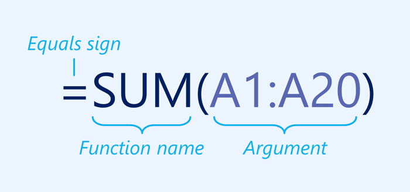
Làm việc với các đối số
Các đối số có thể tham chiếu đến cảô riêng lẻvàphạm vi ôvà phải được đặt trongdấu ngoặc đơn. Bạn có thể bao gồm một đối số hoặc nhiều đối số, tùy thuộc vào cú pháp yêu cầu của hàm.
Ví dụ: hàm=AVERAGE(B1:B9)sẽ tínhtrung bìnhcủa các giá trị trong phạm vi ô B1:B9. Hàm này chỉ chứa một đối số.
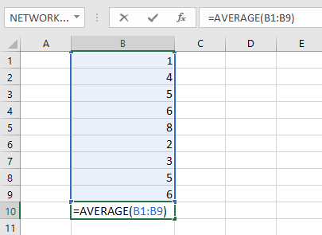
Nhiều đối số phải được phân tách bằngdấu phẩy. Ví dụ: hàm=SUM(A1:A3, C1:C2, E1)sẽcộnggiá trị của tất cả các ô trong ba đối số.
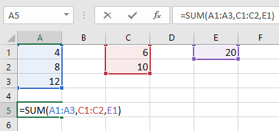
Tạo một chức năng
Có rất nhiều hàm có sẵn trong Excel. Dưới đây là một số chức năng phổ biến nhất mà bạn sẽ sử dụng:
- SUM: Hàm nàycộngtất cả giá trị của các ô trong đối số.
- AVERAGE: Hàm này xác địnhtrung bìnhcủa các giá trị có trong đối số. Nó tính tổng của các ô và sau đó chia giá trị đó cho số ô trong đối số.
- COUNT: Hàm nàyđếmsố ô có dữ liệu số trong đối số. Hàm này rất hữu ích để đếm nhanh các mục trong một phạm vi ô.
- MAX: Hàm này xác địnhgiá trị ôcao nhất****có trong đối số.
- MIN: Hàm này xác địnhgiá trị ô thấp nhấtcó trong đối số.
Để tạo một hàm bằng lệnh AutoSum:
LệnhAutoSumcho phép bạn tự động chèn các hàm phổ biến nhất vào công thức của mình, bao gồm SUM, AVERAGE, COUNT, MAX và MIN. Trong ví dụ bên dưới, chúng ta sẽ sử dụng hàmSUMđể tínhtổng chi phícho danh sách các mặt hàng được đặt hàng gần đây.
- Chọnôsẽ chứa hàm. Trong ví dụ của chúng tôi, chúng tôi sẽ chọn ôD13.
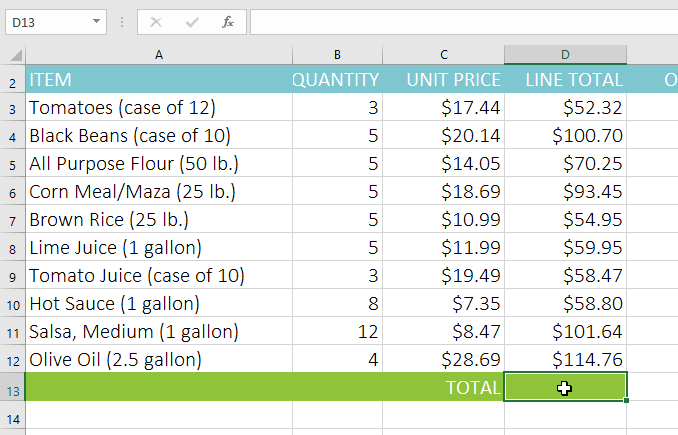
2. Trong nhómChỉnh sửatrên tabTrang chủ, hãy nhấp vàomũi tênbên cạnh lệnhTự động tính tổng. Tiếp theo, chọnchức năng mong muốntừ menu thả xuống. Trong ví dụ của chúng tôi, chúng tôi sẽ chọnSum.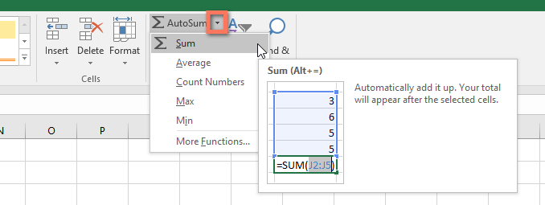
3. Excel sẽ đặthàmvào ô và tự động chọnphạm vi ôcho đối số. Trong ví dụ của chúng tôi, các ôD3:D12được chọn tự động; giá trị của chúng sẽ đượcthêmđể tính tổng chi phí. Nếu Excel chọn sai phạm vi ô, bạn có thể nhập thủ công các ô mong muốn vào đối số.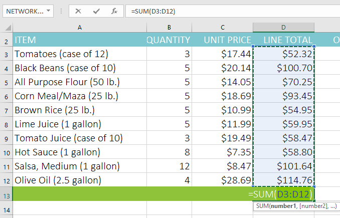
4. NhấnEntertrên bàn phím của bạn. Hàm sẽ đượctínhvàkết quảsẽ xuất hiện trong ô. Trong ví dụ của chúng tôi, tổng của D3:D12 là$765,29.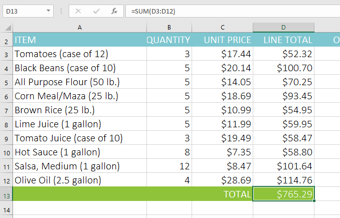
Bạn cũng có thể truy cập lệnhAutoSumtừ tabCông thứctrênRibbon.
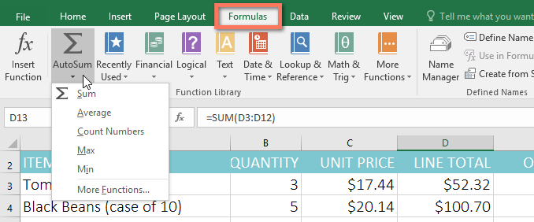
Bạn cũng có thể sử dụng phím tắtAlt+=thay vì lệnh Tự tính tổng. Để sử dụng phím tắt này, hãy giữ phímAltrồi nhấndấu bằng.
Xem video bên dưới để thấy lối tắt này hoạt động.
Để nhập một chức năng theo cách thủ công:
Nếu bạn đã biết tên hàm thì bạn có thể tự gõ dễ dàng. Trong ví dụ bên dưới (kiểm đếm doanh số bán bánh quy), chúng tôi sẽ sử dụng hàmAVERAGEđể tínhsố đơn vị trung bình đã báncủa mỗi đội.
- Chọnôsẽ chứa hàm. Trong ví dụ của chúng tôi, chúng tôi sẽ chọn ôC10.
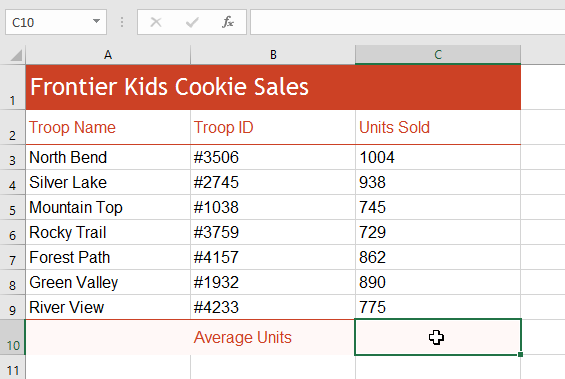
2. Nhậpdấu bằng (=), sau đó nhậptên hàmmong muốn. Bạn cũng có thể chọn hàm mong muốn từ danh sáchgợi ýhàmxuất hiện bên dưới ô khi bạn nhập. Trong ví dụ của chúng tôi, chúng tôi sẽ nhập=AVERAGE.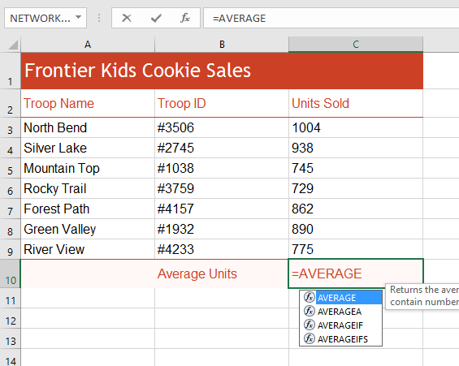
3. Nhậpphạm vi ôcho đối số bên trongdấu ngoặc đơn. Trong ví dụ của chúng tôi, chúng tôi sẽ nhập(C3:C9). Công thức này sẽ cộng các giá trị của ô C3:C9, sau đó chia giá trị đó cho tổng số giá trị trong phạm vi.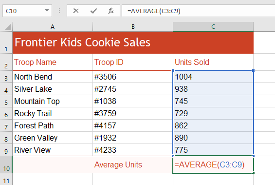
4. NhấnEntertrên bàn phím của bạn. Hàm sẽ được tính toán vàkết quảsẽ xuất hiện trong ô. Trong ví dụ của chúng tôi, số lượng đơn vị trung bình được bán bởi mỗi đội quân là849.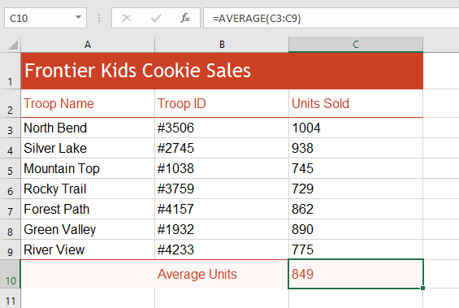
Excelkhông phải lúc nào cũng cho bạn biếtnếu công thức của bạn có lỗi, vì vậy, bạn có trách nhiệm kiểm tra tất cả các công thức của mình. Để tìm hiểu cách thực hiện việc này, hãy đọc bài học Kiểm tra kỹ công thức của bạn từ hướng dẫn về Công thức Excel của chúng tôi.
Thư viện hàm
Mặc dù có hàng trăm hàm trong Excel nhưng những hàm bạn sẽ sử dụng nhiều nhất sẽ phụ thuộc vàoloại dữ liệutrong sổ làm việc của bạn. Không cần phải tìm hiểu từng hàm riêng lẻ nhưng việc khám phá một sốloạihàm khác nhau sẽ giúp ích khi bạn tạo dự án mới. Bạn thậm chí có thể sử dụngThư viện hàmtrên tabCông thứcđể duyệt các hàm theo danh mục, bao gồmTài chính,Logic,Văn bảnvàNgày & giờ.
Để truy cậpThư viện hàm, hãy chọn tabCông thứctrênRibbon. Tìm nhómThư viện hàm.
Nhấp vào các nút trong phần tương tác bên dưới để tìm hiểu thêm về các loại hàm khác nhau trong Excel.
chỉnh sửa điểm phát sóng
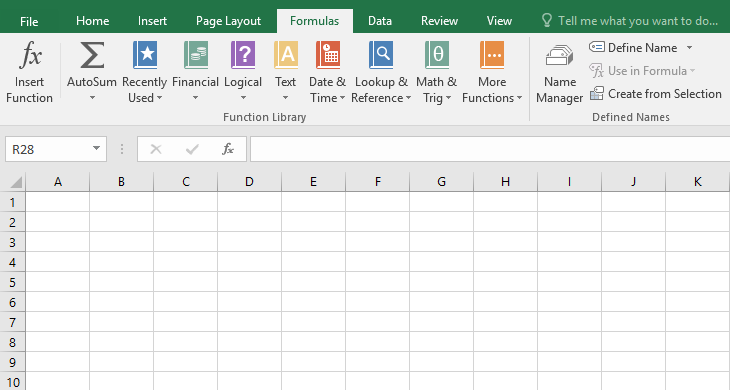
Lệnh Tự Tính Tổng
LệnhAutoSumcho phép bạn tự động trả về kết quả cho các hàm phổ biến nhưSUM,AVERAGEvàCOUNT.
Được sử dụng gần đây
LệnhĐược sử dụng gần đâycho phép bạn truy cập vào các chức năng mà bạn đã làm việc gần đây.
Tài chính
Danh mụcTài chínhchứa các hàm tính toán tài chính như xác định khoản thanh toán (PMT) hoặc lãi suất cho khoản vay (RATE).
Hợp lý
Các hàm trong danh mụcLogickiểm tra các đối số để tìm một giá trị hoặc điều kiện. Ví dụ: nếu đơn hàng lớn hơn $50, hãy thêm $4,99 phí vận chuyển; nếu nó lớn hơn $100, không tính phí vận chuyển (IF).
Chữ
Danh mụcVăn bảnchứa các hàm hoạt động với văn bản trong các đối số để thực hiện các tác vụ, chẳng hạn như chuyển đổi văn bản thành chữ thường (LOWER) hoặc thay thế văn bản (REPLACE).
Ngày & Giờ
Danh mụcNgày & Giờchứa các hàm để làm việc với ngày và giờ và sẽ trả về các kết quả như ngày và giờ hiện tại (NOW) hoặc giây (SECOND).
Tra cứu & tham khảo
Danh mụcTra cứu & Tham khảochứa các hàm sẽ trả về kết quả tìm kiếm và tham chiếu thông tin. Ví dụ: bạn có thể thêm siêu liên kết vào một ô (HYPERLINK) hoặc trả về giá trị của giao điểm hàng và cột cụ thể (INDEX).
Toán & Lượng giác
Danh mụcToán học & Lượng giácbao gồm các hàm dành cho đối số bằng số. Ví dụ: bạn có thể làm tròn các giá trị (ROUND), tìm giá trị của Pi (PI), nhân (SẢN PHẨM) và tổng phụ (SUBTOTAL).
Nhiều chức năng hơn
Chức năng khácchứa các hàm bổ sung trong các danh mục dành choThống kê,Kỹ thuật,Khối lập phương,Thông tinvàKhả năng tương thích.
Chèn chức năng
Nếu bạn gặp khó khăn khi tìm hàm phù hợp, lệnhChèn hàmcho phép bạn tìm kiếm hàm bằng từ khóa.
Để chèn một hàm từ Thư viện hàm:
Trong ví dụ bên dưới, chúng ta sẽ sử dụng hàm COUNTA để đếm tổng số mục trong cộtMục. Không giống như COUNT,COUNTAcó thể được sử dụng để kiểm đếm các ô có chứa bất kỳ loại dữ liệu nào, không chỉ dữ liệu số.
- Chọnôsẽ chứa hàm. Trong ví dụ của chúng tôi, chúng tôi sẽ chọn ôB17.
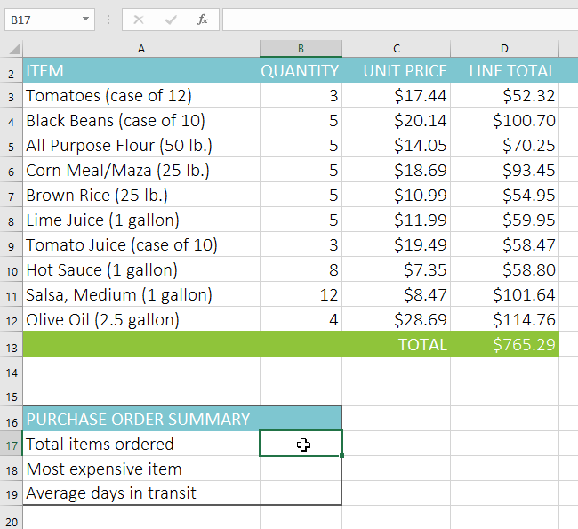
2. Nhấp vào tabCông thứctrênRibbonđể truy cậpThư viện hàm. 3. Từ nhómThư viện hàm, chọndanh mục hàmmong muốn. Trong ví dụ của chúng tôi, chúng tôi sẽ chọnChức năng khác, sau đó di chuột quaThống kê.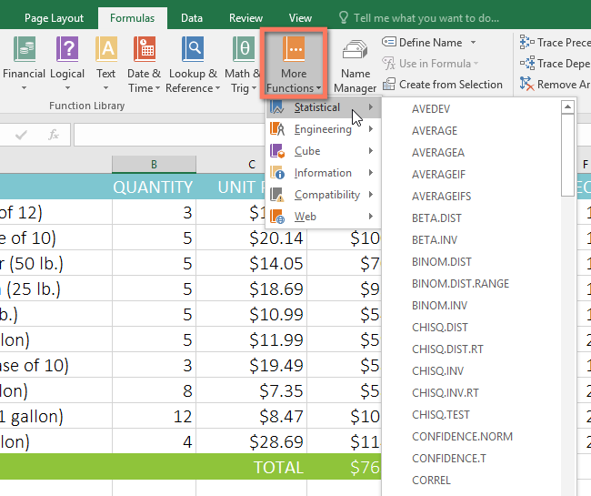
4. Chọnchức năng mong muốntừ menu thả xuống. Trong ví dụ của chúng tôi, chúng tôi sẽ chọn hàmCOUNTAđể đếm số ô trong cộtItemskhông trống.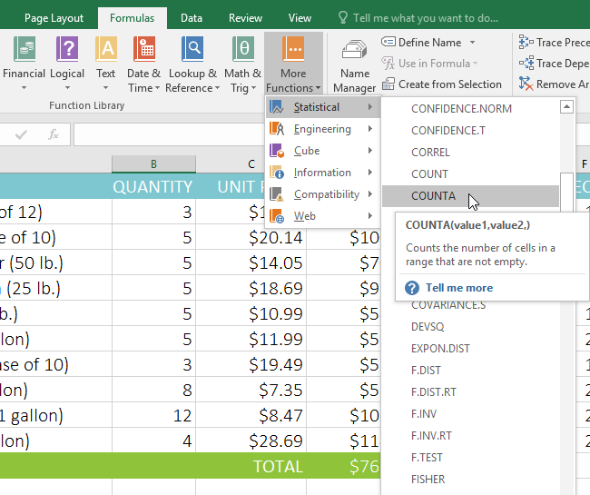
5. Hộp thoạiĐối số hàmsẽ xuất hiện. Chọn trườngValue1, sau đó nhập hoặc chọn các ô mong muốn. Trong ví dụ của chúng tôi, chúng tôi sẽ nhập phạm vi ôA3:A12. Bạn có thể tiếp tục thêm đối số trong trườngValue2, nhưng trong trường hợp này, chúng tôi chỉ muốn đếm số ô trong phạm vi ôA3:A12. 6. Khi bạn hài lòng, hãy nhấp vàoOK.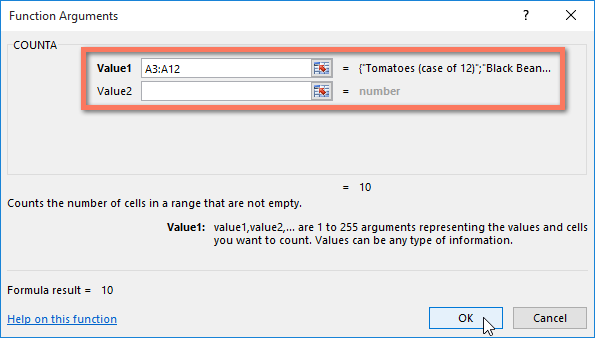
7. Hàm sẽ đượctínhvàkết quảsẽ xuất hiện trong ô. Trong ví dụ của chúng tôi, kết quả cho thấy10 mặt hàngđã được đặt hàng.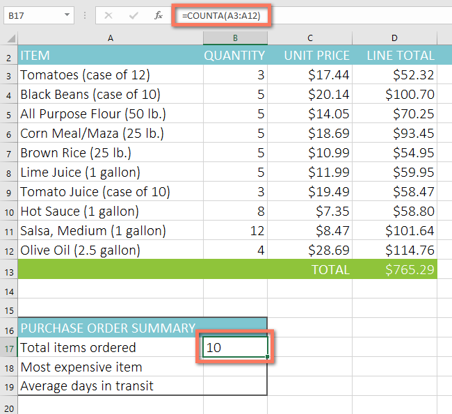
Lệnh Chèn hàm
Mặc dù Thư viện hàm là nơi tuyệt vời để duyệt tìm các hàm nhưng đôi khi bạn có thể thíchtìm kiếmmột hàm hơn. Bạn có thể làm như vậy bằng cách sử dụng lệnhInsert Function. Có thể mất một số lần thử và sai sót tùy thuộc vào loại hàm bạn đang tìm kiếm, nhưng nếu thực hành, lệnh Chèn Hàm có thể là một cách hiệu quả để tìm hàm một cách nhanh chóng.
Để sử dụng lệnh Chèn hàm:
Trong ví dụ bên dưới, chúng ta muốn tìm một hàm sẽ tínhsố ngày làm việcđể nhận được các mặt hàng sau khi chúng được đặt hàng. Chúng tôi sẽ sử dụng ngày trong cộtEvàFđể tính thời gian giao hàng trong cộtG.
- Chọnôsẽ chứa hàm. Trong ví dụ của chúng tôi, chúng tôi sẽ chọn ôG3.
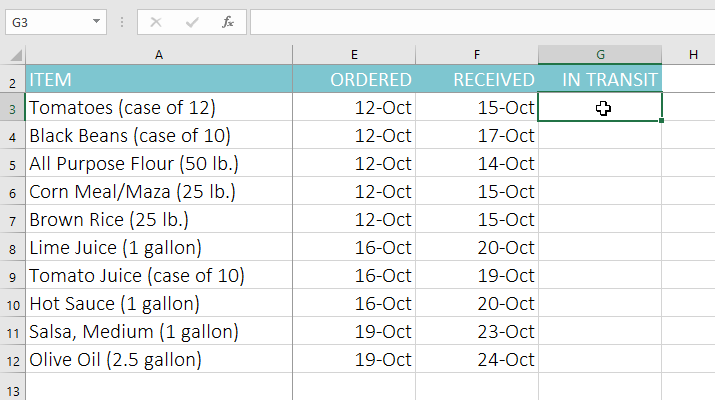
2. Nhấp vào tabCông thứctrênRibbon, sau đó nhấp vào lệnhChèn hàm.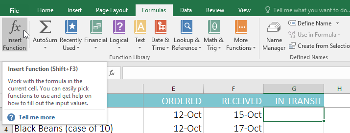
3. Hộp thoạiChèn chức năngsẽ xuất hiện. 4. Nhập một vàitừ khóamô tả phép tính mà bạn muốn hàm thực hiện, sau đó nhấp vàoĐi. Trong ví dụ của chúng tôi, chúng tôi sẽ nhậpđếm ngàynhưng bạn cũng có thể tìm kiếm bằng cách chọndanh mụctừ danh sách thả xuống.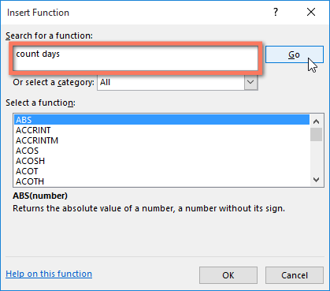
5. Xem lạikết quảđể tìm hàm mong muốn, sau đó nhấp vàoOK. Trong ví dụ của chúng tôi, chúng tôi sẽ chọnNETWORKDAYS, sẽ tính số ngày làm việc giữa ngày đặt hàng và ngày nhận được.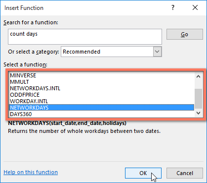
6. Hộp thoạiĐối số hàmsẽ xuất hiện. Từ đây, bạn sẽ có thể nhập hoặc chọn các ô sẽ tạo nên các đối số trong hàm. Trong ví dụ của chúng tôi, chúng tôi sẽ nhậpE3vào trườngBắt đầu_ngàyvàF3vào trườngKết thúc_ngày. 7. Khi bạn hài lòng, hãy nhấp vàoOK.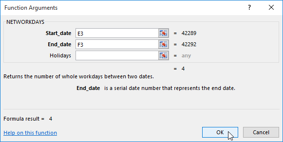
8. Hàm sẽ đượctínhvàkết quảsẽ xuất hiện trong ô. Trong ví dụ của chúng tôi, kết quả cho thấy phải mấtbốn ngày làm việcđể nhận được đơn đặt hàng.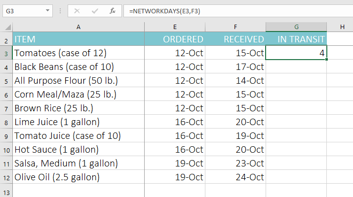
Giống như công thức, các hàm có thể được sao chép sang các ô liền kề. Chỉ cần chọnôchứa hàm, sau đó nhấp và kéobộ điều khiển điềnqua các ô bạn muốn điền. Hàm sẽ được sao chép và giá trị của các ô đó sẽ được tính tương ứng với các hàng hoặc cột của chúng.
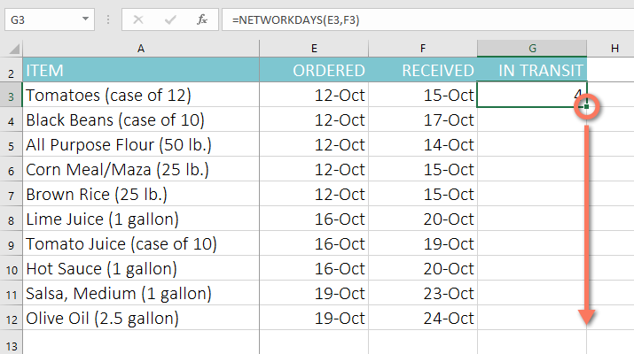
Để tìm hiểu thêm:
Nếu bạn cảm thấy thoải mái với các chức năng cơ bản, bạn có thể muốn thử một chức năng nâng cao hơn nhưVLOOKUP. Hãy xem lại bài học của chúng tôi về Cách sử dụng hàm VLOOKUP của Excel để biết thêm thông tin.
Để tìm hiểu thêm về cách làm việc với các hàm, hãy truy cập hướng dẫn Công thức Excel của chúng tôi.
Thử thách!
- Mở sổ làm việc thực hành của chúng tôi.
- Nhấp vào tabThử tháchở phía dưới bên trái của sổ làm việc.
- Trong ôF3, hãy chèn một hàm để tínhtrung bìnhcủa bốn điểm trong các ôB3:E3.
- Sử dụngbộ điều khiển điềnđể sao chép hàm của bạn trong ôF3sang các ôF4:F17.
- Trong ôB18, hãy sử dụng lệnhTự tính tổngđể chènhàmtính toán điểmthấp nhấttrong các ôB3:B17.
- Trong ôB19, hãy sử dụngThư viện hàmđể chèn hàm tínhtrung vịcủa điểm số trong các ôB3:B17.Gợi ý: Bạn có thể tìm hàm trung vị bằng cách đi tớiHàm khác > Thống kê.
- Trong ôB20, hãy tạo mộthàmđể tính điểmcao nhấttrong các ôB3:B17.
- Chọn các ôB18:B20, sau đó sử dụngbộ điều khiển điềnđể sao chép tất cả ba hàm bạn vừa tạo vào các ôC18:F20.
- Khi bạn hoàn tất, sổ làm việc của bạn sẽ trông như thế này:

/en/excel/basic-tips-for-working-with-data/content/